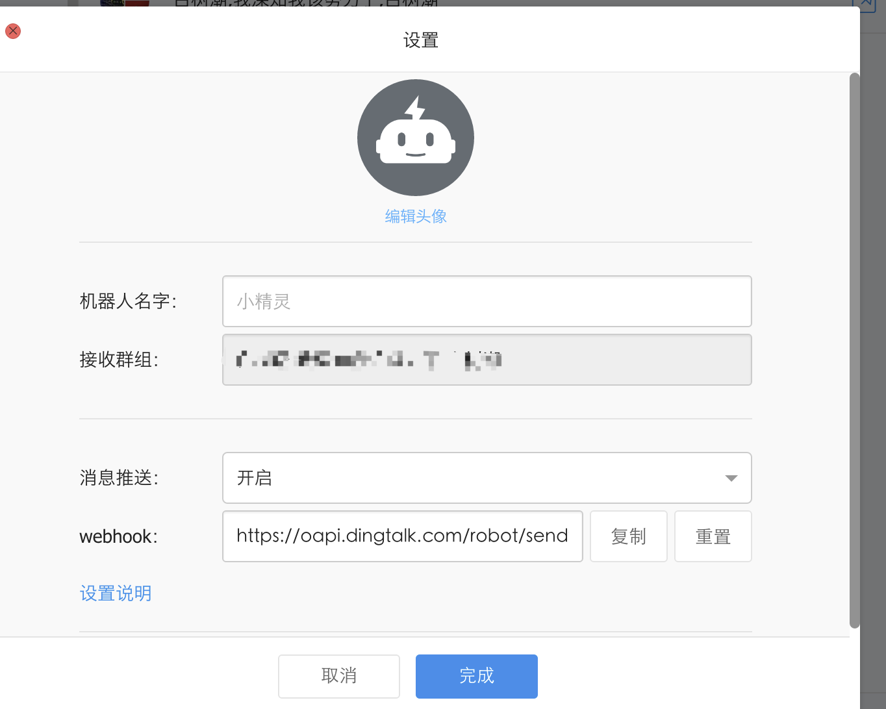
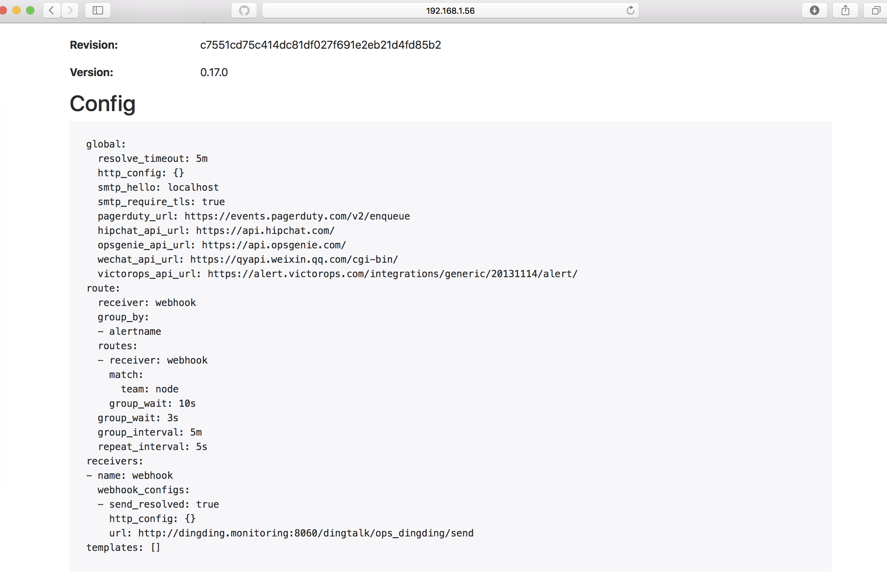
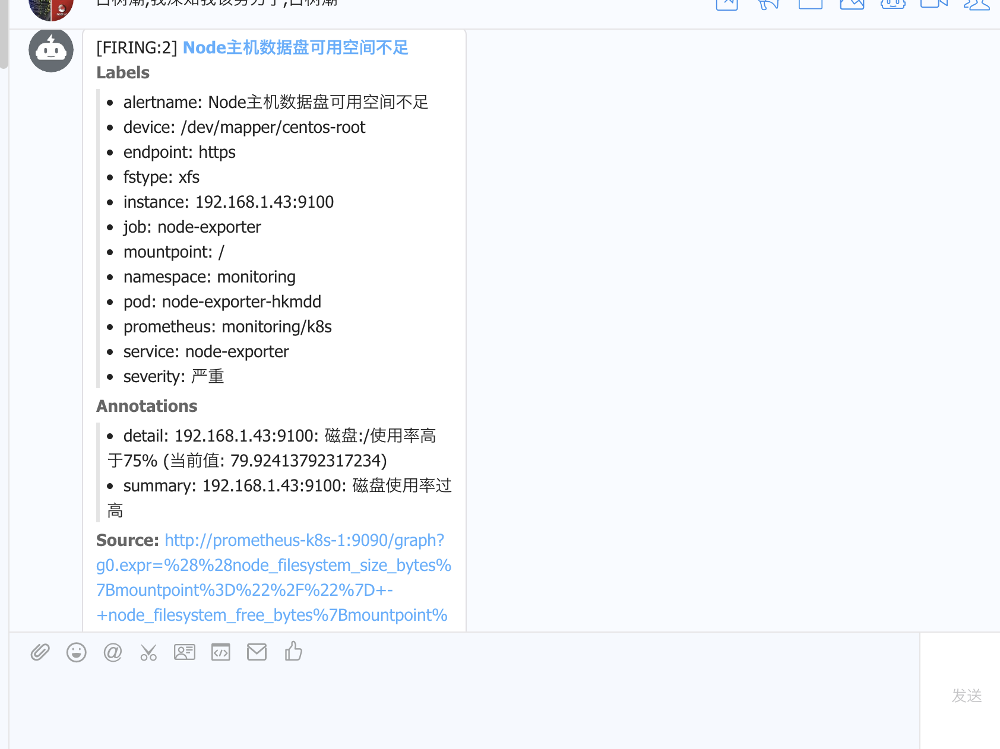

alertmanager：alertmanager是一个告警机制，更具不同的需要可以设置邮件告警、钉钉告警，这里小编使用的是钉钉告警；钉钉告警需要接入prometheus-webhook-dingtalk
创建钉钉机器人
参考文档：https://open-doc.dingtalk.com/microapp/serverapi2/krgddi

编译prometheus-webhook-dingtalk
参考文档：http://theo.im/blog/2017/10/16/release-prometheus-alertmanager-webhook-for-dingtalk/
插件下载地址：https://github.com/timonwong/prometheus-webhook-dingtalk
1
2
3
4
5
6
7
8
9
10
11
12
13
14
15
16
17
18
19
20
21
22
23
24
25
| mkdir -p /usr/lib/golang/src/github.com/timonwong/
cd /usr/lib/golang/src/github.com/timonwong/
git clone https://github.com/timonwong/prometheus-webhook-dingtalk.git
cd prometheus-webhook-dingtalk
make
# 启动
nohup ./prometheus-webhook-dingtalk --ding.profile="ops_dingding=https://oapi.dingtalk.com/robot/send?access_token=4a6291157bb6e228836dd43e5fa72304231ceb8f139849c813167fa1593d2546" 2>&1 1>dingding.log &
[root@ks-master01 ~]
tcp6 0 0 :::8060 :::* LISTEN 103134/./prometheus
.....
spec:
containers:
- args:
- --ding.profile='ops_dingding=https://oapi.dingtalk.com/robot/send?access_token=4a6291157bb6e228836dd43e5fa72304231ceb8f139849c813167fa1593d2546'
command:
- /bin/prometheus-webhook-dingtalk
image: baixiaochao/prometheus-webhook-dingtalk
imagePullPolicy: Always
name: dingding
.....
|
接入Alertmanager
1
2
3
4
5
6
7
8
9
10
11
12
13
14
15
16
17
18
19
20
21
22
| [root@ks-master01 prometheus-operator]# more alertmanager.yaml
global:
resolve_timeout: 5m
route:
receiver: webhook
group_wait: 3s
group_interval: 5m
repeat_interval: 5s
group_by: [alertname]
routes:
- receiver: webhook
group_wait: 10s
match:
team: node
receivers:
- name: webhook
webhook_configs:
- url: "http://dingding.monitoring:8060/dingtalk/ops_dingding/send"
send_resolved: true
[root@ks-master01 prometheus-operator]# kubectl delete secret alertmanager-main -n monitoring
[root@ks-master01 prometheus-operator]# kubectl create secret generic alertmanager-main --from-file=alertmanager.yaml -n monitoring
|
验证
可以通过alertmanager web端查看配置

